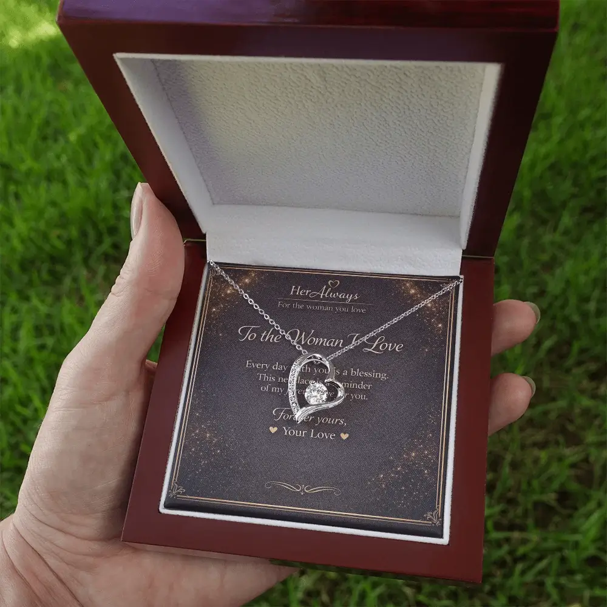
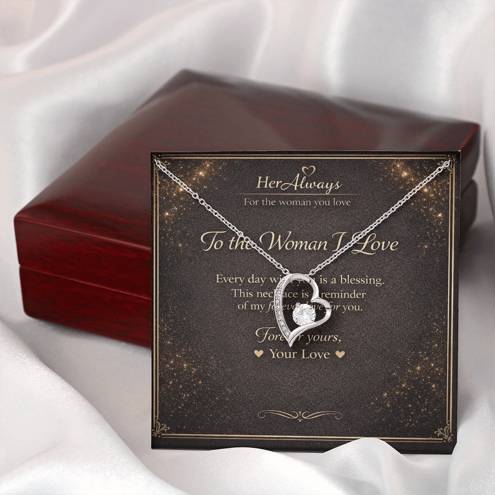

The best Christmas necklace for your girlfriend depends on how long you have dated. In the first two months, skip jewelry and give something small. From 3 to 12 months, a simple heart necklace with a message card is a safe, meaningful gift. After a year or more, you can choose a deeper symbol, such as interlocking hearts or a love knot. To arrive by December 25, order by Wednesday, December 2.
Below you will find the right pick for each stage, what to spend, what to write on the card, a free order-by date tool, and what to do if it might arrive late.
Quick Picks by Stage
New | First Christmas | Serious | Long distance | Order-by tool | Card messages | FAQ
| Together for | Best Christmas pick | Skip |
|---|---|---|
| Under 2 months | A small gift and a handwritten note (ideas) | Any necklace, name jewelry, “forever” cards |
| 2 to 6 months | Forever Love ($79.95) with a light card | Love knot, name necklace |
| 6 to 12 months | Forever Love or Interlocking Hearts ($79.95) | Anything that sounds like a promise of marriage |
| 1 year or more | Custom Name ($69.95) or Love Knot ($109.95) | Generic gifts that could be for anyone |
| Long distance | Infinity Love ($59.95) plus a call on Christmas morning | Gifts that need setup |
Not sure? Choose the heart. Almost everyone reads it as affection, not as a big promise.
How to Choose a Christmas Necklace
Christmas adds pressure. You want it to feel special, but not heavy. Three rules help:
- Match the symbol to your stage. A necklace tells her where you think the relationship is going. Pick the symbol on purpose.
- Look at what she already wears. Check whether she prefers silver or gold tones, and whether she wears pendants at all. Our necklaces come in white gold and rose gold finishes.
- Add your own words. The card is what she will keep. Write it yourself.
Christmas Gift for a New Girlfriend (Under 2 Months)
If you have only just started dating, a necklace can feel like too much. She may feel she needs to give something back. Keep the gift light and personal instead:
- Her favorite treat or drink, with a note. Two honest lines by hand are enough.
- A book or small item tied to something she said. It shows you were listening.
- A planned date. Dinner at the place she mentioned, or a winter walk with hot chocolate.
- A playlist and a short card. It costs almost nothing and feels personal.
Skip at this stage: name jewelry, rings, and any card that says “forever.” Wait until you have had the “are we exclusive?” talk. For more small ideas, see our first birthday gift guide, which uses the same stage rules.
First Christmas Together (2 to 12 Months)
From about two months, a simple necklace can work well if it matches her taste and the card stays light. This is the stage where the heart is the safest choice. It says “I care about you” without promising the future. Read the heart necklace meaning guide to see what each heart style says.
- 2 to 6 months: the Forever Love Necklace ($79.95). Write something warm about this year, not about forever.
- 6 to 12 months: Forever Love again, or the Interlocking Hearts Necklace ($79.95) if you already feel like a real couple. See the interlocking hearts meaning.

What Does It Cost? An Honest Note on Budget
Many people spend between $25 and $100 on an early Christmas gift, then more as the relationship grows. Our necklaces start at $59.95, so they sit in the upper half of that range. If you are under three months in and that feels like a lot, pick a smaller gift now and save the necklace for Valentine’s Day or her birthday. There is more on timing in our guide to jewelry as a Valentine’s Day gift.
Serious Relationship (1 Year or More)
After a year, you can choose a symbol with more weight, and make the card more personal. Here is what each necklace says and who it suits:
| Necklace | Price | What it says | Best when |
|---|---|---|---|
 Forever Love Forever Love | $79.95 | Lasting love, in a symbol everyone understands | You want the safest meaningful choice |
 Interlocking Hearts Interlocking Hearts | $79.95 | Two people joined together | You feel like a real couple |
 Custom Name Custom Name | $69.95 | Made for her alone | She likes name jewelry and you are past the early stage |
 Love Knot Love Knot | $109.95 | A deep commitment | Your relationship is serious and settled |
Good to know before you order: our necklaces use a 14k white gold or rose gold finish over steel, with lab-created cubic zirconia stones. They are not solid gold or diamonds. Each is made to order, and a name necklace is made exactly as you type it (up to 11 characters), so check the spelling. For every symbol in detail, see 15 necklace symbols and their meanings and what a necklace gift means in a relationship.
Christmas Necklace for a Long-Distance Girlfriend
If you cannot be there, the gift has to carry the feeling. The Infinity Love Necklace ($59.95) suits distance well, because the infinity symbol stands for a connection that stays the same across any gap. Time the delivery for Christmas week, then open gifts together on a video call. For international orders, use the tool below and allow extra days. More ideas are in our long-distance gift guide.
Will It Arrive by Christmas? (Order-by Date Tool)
Our necklaces ship free worldwide: about 6 to 12 business days in the US and 6 to 15 internationally. Check the day you want it to arrive. The tool uses the longer international time plus 2 extra business days as a cushion, so US orders have a little more room.
For Christmas Day (December 25), the safe order-by date is Wednesday, December 2. If you are reading this after that date, see the plan below.
If It Might Arrive After Christmas
Do not panic and do not skip the necklace. Instead:
- Wrap the message card or a printed tracking page. Tell her the necklace is on its way.
- Add one small gift to open on the day, such as her favorite treat.
- Give the necklace as a second gift. Many people save it for New Year’s Eve or Valentine’s Day, which gives it its own moment.
What to Write on the Christmas Card
Every HerAlways necklace comes with a message card, and you can write your own words. Keep it short, true and specific. Name one thing you love about her or one moment from the year. Examples by stage:
New (2 to 6 months)
Merry Christmas. I am really glad I got to spend this one with you. Thank you for making this year so much better.
First Christmas together
Merry Christmas. Every day this year, you made me smile. I hope this reminds you how much you mean to me.
Serious relationship
Merry Christmas. You are my favorite part of every year. I love you today and I will tomorrow.
Long distance
Merry Christmas. I wish I could hand this to you myself. Until I can, wear it and know I am with you.
Want more? Our necklace gift message guide has 70+ messages to copy, and the message card necklaces page shows how the cards work.

How to Give Her the Necklace on Christmas
- Hide it on the tree. Hang the gift box among the ornaments and let her find it.
- Put the card in her stocking. Read the card first, then give the box.
- Save it for last. Open it after the other gifts, when it is quiet and just the two of you.
- Put it on her yourself. Our guide to giving a necklace has 9 ways to do it, even if you are nervous.
When a Necklace Is the Wrong Christmas Gift
A necklace is not always right. Choose something else if:
- You have dated only a few weeks.
- She rarely wears jewelry, or only wears one metal color.
- You are not sure she feels the same way yet.
- You are past the order-by date and she lives far away.
In those cases, the gifts in our romantic gift ideas for your girlfriend guide are a better call, and the necklace can wait for Valentine’s Day.
A Christmas Gift With Words Built In
If you have dated for three months or more, the Forever Love Necklace ($79.95) is a safe, meaningful Christmas gift. It arrives in a gift box with a message card you can write yourself. Order by Wednesday, December 2 to have it before Christmas.
See the Forever Love NecklaceFAQ: Christmas Necklaces for Your Girlfriend
Is a necklace a good Christmas gift for a girlfriend?
Yes, if you have been together a few months or more and she wears jewelry. A necklace is worn daily, so it keeps reminding her of you. In the first weeks of dating, a small gift with a note is a safer choice.
Is a necklace too much for a first Christmas together?
Not after about three months, if the symbol is simple. A heart is the safest choice. Skip name jewelry and “forever” messages if you have only dated a short time, and keep the card message light.
What necklace should I buy my girlfriend for Christmas?
Match the symbol to your stage. A heart suits most couples, interlocking hearts suit a settled couple, an infinity suits long distance or a sure future, and a love knot suits a serious, long relationship.
How much should I spend on a Christmas necklace for my girlfriend?
Many people spend between $25 and $100 early in a relationship and more as it grows. Our necklaces run from $59.95 to $109.95. If that feels like too much for your stage, choose a smaller gift now.
When do I need to order a necklace for it to arrive by Christmas?
For December 25, order by about Wednesday, December 2. That uses our longer international shipping time plus a two-day cushion. US orders have a little more room, but ordering earlier is safer.
What should I write on a Christmas card with a necklace?
Keep it short, true and specific. Name one thing you love about her or one memory from the year, then add a simple close such as “Merry Christmas. I love you.” You will find examples by stage in this guide.
What if the necklace arrives after Christmas?
Wrap the message card or a printed tracking page and tell her the necklace is on its way. Opening a note on Christmas morning still feels personal, and the necklace becomes a second gift when it lands.
What is a good Christmas gift for a new girlfriend?
Something small tied to a thing she told you: her favorite treat, a book or a planned date, with a handwritten note. Keep the price modest and avoid anything that promises the long term.